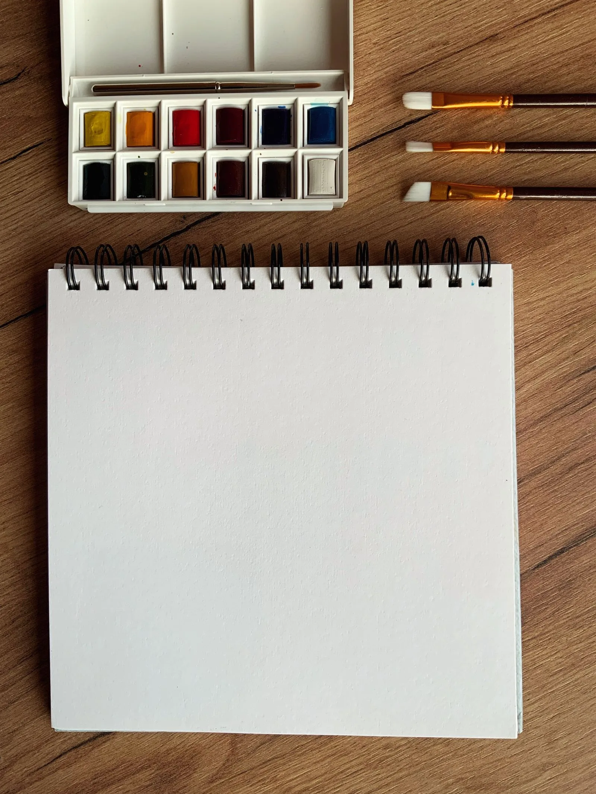

Chọn giấy và cọ màu nước — đọc nhãn và thử trước khi mua
Tác giả: Ruler
Chuyên mục: Bắt đầu từ số 0 — Cập nhật: 23/11/2026
Bài bộ đồ tối thiểu đã nói ngắn gọn: giấy nên mua 300 gsm cold press, cọ nên mua ba cây. Bài này là phần đọc kỹ hơn cho lần mua thứ hai, khi bạn đã vẽ được vài bức và bắt đầu thấy giấy cũ chưa hợp tay, hoặc cọ cũ đã xòe đầu. Bạn sẽ học cách đọc nhãn giấy và nhãn cọ, cách thử giấy và cọ bằng một bài tập năm phút tại nhà, và cách chăm cọ để cọ dùng được lâu.
Những kỹ thuật pha màu và loang màu đã có ở bài bộ đồ tối thiểu và bài loang màu. Bài này chỉ tập trung vào hai món: giấy và cọ. Nếu bạn đang chuẩn bị mua giấy lần đầu, bạn chỉ cần đọc phần giấy 300 gsm và phần thử năm phút, rồi quay lại bài bộ đồ tối thiểu để mua đủ bộ.

Ảnh minh họa: ảnh stock của Marharyta Shtyfura trên Pexels (giấy phép Pexels, dùng thương mại được) — sổ giấy, hộp màu và cọ trên bàn gỗ, minh họa giấy và cọ màu nước; không phải đồ vẽ của Ruler.
Đọc nhãn giấy: bốn chữ quan trọng nhất
Nhãn giấy màu nước thường ghi bốn thông tin: định lượng, thành phần, bề mặt và khổ. Bạn chỉ cần hiểu bốn chữ đó là đủ để chọn giấy mà không cần nhờ người bán tư vấn quá nhiều.
Định lượng ghi bằng gsm, nghĩa là gam trên mỗi mét vuông giấy. Số gsm càng cao thì giấy càng dày và càng chịu nước tốt. Cass Art giải thích rằng gsm là chỉ số trọng lượng giấy, gsm càng thấp thì giấy càng dễ cong khi khô, và các định lượng phổ biến là 190 gsm, 300 gsm, 356 gsm và 638 gsm. Giấy Professional của Winsor & Newton mà hãng giới thiệu có định lượng 300 gsm, tương đương 140 lb, làm từ 100% cotton, không axit, có ba bề mặt hot press, cold press và rough. Mỹ thuật Bụi khuyên người mới chọn giấy tối thiểu 200 gsm, lý tưởng là 300 gsm trở lên. PM Art & Crafts cũng khuyên giấy từ 200 đến 300 gsm để giấy chịu nước tốt hơn.
Vậy bạn nên hiểu con số này như thế nào trong thực tế? Giấy dưới 200 gsm dễ cong khi khô, theo Cass Art, nên khó dùng cho bài loang nhiều nước; giấy từ 200 gsm trở lên, theo Mỹ thuật Bụi và PM Art & Crafts, chịu nước tốt hơn. Giấy 300 gsm là mức cân bằng cho người mới theo hai nguồn trên: đủ dày để loang màu và là mức phổ biến trong các hướng dẫn cho người mới. Giấy dày hơn 300 gsm thì ít cong hơn khi khô, theo Cass Art, nhưng cũng nặng hơn; bạn chỉ cần khi đã vẽ tranh lớn hoặc vẽ nhiều lớp nước. Bạn không cần nhớ hết các mức gsm, chỉ cần nhớ: lần đầu chọn 300 gsm, lần sau muốn thử thì thử một mức khác và so sánh trên cùng một bài tập.
Thành phần giấy ghi là cotton hay cellulose. Giấy cotton làm từ sợi bông, thường khô chậm hơn, màu trong hơn và dễ lấy màu ra hơn. Giấy cellulose làm từ bột gỗ, thường khô nhanh hơn và giá vừa phải hơn. Jackson's Art, trong bài về giấy Winsor & Newton, cho biết giấy Professional làm từ 100% cotton, còn giấy Classic làm từ bột gỗ cellulose cao cấp đã xử lý không axit, cũng có định lượng 300 gsm, nhưng chỉ có bề mặt cold press. Bài viết này cũng cho biết giấy Classic ít thấm hơn giấy Professional, nên màu nằm trên bề mặt và sáng hơn. Bạn có thể hiểu đơn giản: cotton không phải lúc nào cũng tốt hơn với mọi người, mà là khác nhau về cảm giác. Người mới nên bắt đầu với giấy cellulose tốt 300 gsm, rồi khi đã quen tay hãy thử một tờ cotton để tự cảm nhận sự khác nhau.
Bề mặt giấy có ba loại: hot press mịn, cold press hơi nhám, rough nhám rõ. Cass Art mô tả hot press cho bề mặt mịn, hợp vẽ chi tiết và wash đều; cold press cân bằng giữa nhám và mịn, linh hoạt với nhiều kiểu vẽ; rough có vân rõ, hợp vẽ hiệu ứng và nét phóng khoáng. Mỹ thuật Bụi và PM Art & Crafts (hai nguồn tiếng Việt được dẫn ở bài bộ đồ tối thiểu) cùng khuyên người mới chọn cold press, vì nó ở giữa, dễ kiểm soát độ loang mà vẫn giữ được chút vân giấy. Cass Art và Jackson's Art, hai nguồn trong bài này, cũng mô tả cold press là bề mặt cân bằng, được nhiều người thử đầu tiên. Bạn chỉ nên chọn hot press khi bạn thích vẽ chi tiết nhỏ và nét sắc, và chỉ nên chọn rough khi bạn thích vẽ phong cảnh có vân đá, vân cây.
Khổ giấy và dạng đóng gói cũng ghi trên nhãn: tờ rời, sổ gáy keo, hay block dán bốn cạnh. Block dán bốn cạnh giữ giấy phẳng khi ướt, bạn không cần căng giấy trước. Sổ gáy keo tiện mang theo, nhưng giấy có thể cong hơn block một chút. Tờ rời rẻ nhất khi mua số lượng lớn, nhưng bạn cần tự dán băng dính lên bìa cứng trước khi vẽ. Người mới nên chọn block hoặc sổ khổ nhỏ, vì bạn sẽ vẽ ngay mà không cần chuẩn bị thêm.
Bảng đọc nhãn nhanh khi đứng trước kệ giấy
Bảng dưới đây được soạn riêng cho bài này để bạn đối chiếu ngay tại cửa hàng. Bảng không lấy từ một nguồn nào, mà tổng hợp từ bốn thông tin trên nhãn đã nêu ở trên.
| Chữ trên nhãn | Ý nghĩa | Chọn thế nào cho lần đầu |
|---|---|---|
| 300 gsm / 140 lb | Giấy dày vừa, chịu nước tốt | Chọn mức này, tránh giấy dưới 200 gsm để loang màu |
| 100% cotton | Sợi bông, khô chậm, màu trong | Thử sau, chưa cần lần đầu |
| Cellulose | Bột gỗ, khô nhanh hơn, giá vừa phải | Dùng được cho lần đầu nếu đủ 300 gsm |
| Cold press / NOT | Bề mặt hơi nhám, cân bằng | Chọn loại này cho người mới |
| Hot press / HP | Bề mặt mịn, hợp chi tiết | Chỉ chọn khi thích vẽ nét nhỏ |
| Rough | Bề mặt nhám rõ, có vân | Chỉ chọn khi thích hiệu ứng vân |
| Block dán 4 cạnh | Giữ giấy phẳng khi ướt | Ưu tiên cho lần đầu |
| Acid-free | Không axit, ít ố vàng theo thời gian | Nên có, nhất là khi giữ tranh lâu |
Bạn mang bảng này theo khi đi mua, và chỉ cần tìm đúng dòng 300 gsm, cold press, acid-free là đã đủ. Những chữ còn lại trên nhãn như tên dòng giấy, tên nhà máy hay mã sản phẩm không cần nhớ, vì chúng thay đổi theo hãng.
Đọc nhãn cọ: hình dáng, cỡ và lông cọ
Cọ màu nước cũng có ba thông tin chính trên nhãn: hình dáng, cỡ và loại lông. Hình dáng phổ biến nhất là cọ tròn, cọ dẹt và cọ quạt. Cọ tròn có đầu nhọn, vừa tô mảng vừa đi nét, là cây bạn dùng nhiều nhất. Cọ dẹt có đầu phẳng, hợp tô nền và wash đều. Cọ quạt ít dùng hơn, chủ yếu tạo hiệu ứng cỏ hay tán cây, bạn chưa cần mua lần đầu.
Jackson's Art cho biết cọ màu nước có cán ngắn hơn cọ sơn dầu và cọ acrylic, có hình tròn, dẹt và bầu dục; cọ nhỏ hợp vẽ chi tiết, cọ lớn giữ được nhiều nước và hợp tô mảng lớn như bầu trời. Bài viết này cũng cho biết lông chồn truyền thống giữ được nhiều nước, nhưng ngày nay có nhiều lựa chọn tổng hợp tốt, và cọ pha trộn lông tự nhiên với lông tổng hợp cũng là một lựa chọn. Mỹ thuật Bụi ghi rõ cọ lông tổng hợp giá vừa phải đã đáp ứng tốt cho người mới, chưa cần đến cọ lông tự nhiên đắt tiền.
Cỡ cọ ghi bằng số trên thân cọ, nhưng số này không thống nhất giữa các hãng. Một cây cỡ 8 của hãng này có thể to hơn cây cỡ 8 của hãng khác. Vì vậy, bài này khuyên bạn đừng mua cọ chỉ vì số. Hãy cầm thử và làm phép thử nước ngay tại cửa hàng nếu được phép: nhúng cọ vào nước sạch, vẩy nhẹ, xem đầu cọ có tụ lại thành một điểm nhọn hay không. Cọ tốt sẽ tụ nhọn và đàn hồi trở lại khi bạn ấn nhẹ rồi buông ra. Cọ mà đầu lông xòe ra, tách thành nhiều nhánh, thì dù rẻ cũng nên bỏ qua.
Bộ ba cọ đã nêu ở bài bộ đồ tối thiểu vẫn là bộ chuẩn cho website này: cọ tròn cỡ 8 làm cây chính, cọ tròn cỡ 4 để vẽ chi tiết, cọ dẹt rộng khoảng hai centimet để tô nền. Bạn không cần mua thêm cọ tỉa rất nhỏ hay cọ quạt trong tháng đầu. Khi nào bạn vẽ hoa nhỏ nhiều và thấy cọ cỡ 4 vẫn to, lúc đó hãy mua thêm một cây cỡ 2. Khi nào bạn vẽ nền lớn nhiều và thấy cọ dẹt hai centimet vẫn nhỏ, lúc đó hãy mua thêm một cây dẹt lớn hơn.
Bài thử năm phút tại nhà trước khi mua giấy mới
Trước khi mua một loại giấy mới với số lượng lớn, bạn nên thử một tờ trước bằng bài tập năm phút sau. Bài tập này được soạn riêng cho bài này, dùng đúng kỹ thuật loang màu đã học, không lấy từ một nguồn nào.
Bạn cắt tờ giấy thử thành ba dải nhỏ bằng nhau. Trên dải thứ nhất, bạn làm ướt đều rồi chạm một màu xanh dương nhạt, để xem màu loang nhanh hay chậm, viền có mềm không. Trên dải thứ hai, bạn vẽ một vệt màu trên giấy khô, để xem nét có sắc không, màu có bị thấm loang ra ngoài không. Trên dải thứ ba, bạn tô một lớp màu nhạt, đợi khô hẳn, rồi tô thêm một lớp màu khác lên trên, để xem lớp dưới có bị nhấc lên không, màu chồng có trong không.
Sau khi ba dải khô, bạn so sánh với tờ giấy cũ của mình. Bạn ghi lại ba dòng: giấy mới khô nhanh hay chậm hơn giấy cũ, màu trên giấy mới trong hay đục hơn, giấy mới có cong nhiều hơn không. Nếu giấy mới khô quá nhanh khiến bạn không kịp loang màu, có thể giấy đó ít thấm hoặc trời đang nóng, bạn cần làm ướt đều hơn hoặc vẽ nhanh hơn. Nếu giấy mới cong nhiều, bạn cần dán băng dính kỹ hơn hoặc chọn block dán bốn cạnh lần sau. Bài thử này giúp bạn quyết định bằng tay của mình, thay vì quyết định bằng lời quảng cáo trên nhãn.
Bạn cũng nên thử cọ mới bằng cách vẽ một đường dài trên giấy nháp: bắt đầu bằng nét đậm khi ấn cọ xuống, rồi nhấc dần cọ lên để nét mảnh dần. Một cây cọ tròn tốt sẽ cho bạn cả nét đậm và nét mảnh chỉ bằng cách thay đổi lực ấn, không cần đổi cọ. Nếu cọ chỉ vẽ được một loại nét, hoặc đầu cọ tách ra giữa chừng, thì đó không phải cây cọ hợp với bạn, dù số ghi trên thân cọ có đúng như bạn muốn hay không.
Cách chăm cọ để cọ không xòe đầu sau một tháng
Cọ hỏng sớm thường không phải do cọ kém, mà do cách giữ sai. Ba thói quen sau đây giúp cọ của bạn dùng được lâu.
Thứ nhất, rửa cọ ngay sau khi vẽ xong. Bạn rửa bằng nước sạch cho đến khi nước trong, không để màu khô cứng trên lông cọ. Bạn đừng dùng xà phòng mạnh hay chà cọ vào đáy cốc, vì lông cọ sẽ xòe và gãy. Bạn chỉ cần vuốt nhẹ lông cọ trên lòng bàn tay dưới vòi nước, rồi vẩy nhẹ cho ráo.
Thứ hai, vuốt lại đầu cọ cho tụ nhọn rồi mới để khô. Bạn dùng ngón tay ướt vuốt nhẹ đầu cọ từ gốc ra ngọn, cho lông tụ lại thành một điểm. Bạn để cọ nằm ngang hoặc dựng đầu cọ lên trên cho khô. Bạn đừng ngâm cọ trong lọ nước qua đêm, và đừng để cọ dựng đầu xuống, vì nước sẽ chảy vào phần kim loại giữ lông và làm lông rụng dần.
Thứ ba, giữ cọ riêng cho màu nước, đừng dùng chung cọ với màu acrylic hay màu dầu. Lông cọ màu nước mềm và giữ nước tốt, nhưng cũng dễ hỏng nếu dính màu đặc và khô cứng. Bạn nên có một lọ riêng để cắm cọ màu nước, và một lọ riêng để rửa cọ, không để cọ chạm đáy lọ quá lâu khi ngâm.
Giấy thừa sau khi cắt nên giữ lại làm giấy nháp để thử màu và thử cọ. Giấy nháp cùng loại với giấy vẽ thật sẽ cho bạn kết quả thử đúng nhất. Bạn đừng thử màu trên giấy in văn phòng rồi áp kết quả đó sang giấy màu nước, vì hai loại giấy thấm nước khác nhau hoàn toàn.
Kết luận
Chọn giấy và cọ màu nước không khó nếu bạn biết đọc nhãn. Giấy thì tìm 300 gsm, cold press, acid-free, ưu tiên block dán bốn cạnh khổ nhỏ. Cọ thì chọn ba cây tròn cỡ 8, tròn cỡ 4 và dẹt, lông tổng hợp, đầu cọ tụ nhọn khi ướt. Trước khi mua số lượng lớn, bạn thử một tờ bằng bài tập năm phút với ba dải giấy, và thử cọ bằng một đường nét đậm chuyển sang mảnh.
Khi bạn đã chọn được giấy và cọ hợp tay, bạn sẽ thấy kỹ thuật loang màu dễ hơn hẳn, vì giấy và cọ không còn chống lại bạn nữa. Lúc đó, việc còn lại chỉ là cầm cọ lên và vẽ đều tay mỗi ngày.
Nguồn tham khảo
- Cass Art, "Choosing the right Watercolour Paper for you" — gsm là gam trên mét vuông, gsm thấp dễ cong, các mức phổ biến 190, 300, 356, 638 gsm; hot press mịn, cold press cân bằng, rough có vân (truy cập 23/11/2026): https://www.cassart.co.uk/choosing-the-right-watercolour-paper-for-you/
- Jackson's Art Blog, "Winsor & Newton Professional and Classic Watercolour Papers" — giấy Professional 100% cotton 300 gsm, giấy Classic bột gỗ cellulose 300 gsm chỉ có cold press, block dán bốn cạnh giữ giấy phẳng (truy cập 23/11/2026): https://www.jacksonsart.com/blog/2017/08/24/winsor-newton-professional-classic-watercolour-papers/
- Jackson's Art Blog, "Watercolour Painting for Beginners: What You Need to Get Started" — cọ tròn, dẹt, bầu dục; cọ nhỏ vẽ chi tiết, cọ lớn giữ nước tô mảng lớn; lông chồn và lông tổng hợp (truy cập 23/11/2026): https://www.jacksonsart.com/blog/2021/03/23/watercolour-painting-for-beginners-what-you-need-to-get-started/
- Winsor & Newton, "Professional Watercolour Paper - Pad - 300gsm/140lb" — giấy 300 gsm tương đương 140 lb, giấy 100% cotton, bề mặt hot press và cold press, block dán bốn cạnh giữ giấy phẳng (truy cập 23/11/2026): https://www.winsornewton.com/collections/beginner-watercolour-sets/products/professional-watercolour-paper-4-sides-glued-300gsm-140lb
- Mỹ thuật Bụi, "Hướng dẫn cách tô màu nước đẹp cho người mới bắt đầu" — giấy tối thiểu 200 gsm, lý tưởng 300 gsm trở lên, cold press cho người mới (truy cập 23/11/2026): https://mythuatbui.edu.vn/cach-to-mau-nuoc
- PM Art & Crafts, "Hướng dẫn vẽ màu nước cơ bản cho người mới bắt đầu" — giấy 200–300 gsm, cold press cho người mới (truy cập 23/11/2026): https://www.pmartcraft.com/huong-dan-ve-mau-nuoc-co-ban-cho-nguoi-moi-bat-dau-hd127.html